第4章 工程实践
4.1 污师私房菜: OUR 和 SV30 的应用
在污水处理领域，活性污泥工艺可谓无人不知无人不晓。活性污泥吃着排泄物，干着体力活，最终为我们产出清水，真乃当下“撸起袖子”的楷模。说到活性污泥真是让人既爱又恨，爱的是它能帮我们处理污水，恨的是它不善于表达，和人类语言识别系统无法链接，当污水处理系统出问题的时候，初入运维界的你却无法第一时间判断活性污泥究竟为什么罢工，只能求爷爷告奶奶的到处请教大神。

今天通过活性污泥呼吸图谱和污泥沉降性比的应用介绍，通过熟练掌握这两个污水处理厂运维秘籍，让你可以和活性污泥随时交流，对污水处理厂的运行维护清晰把脉，及时准确解决出现的问题，让你的格调得到迅速提升，变身污水处理领域的运维大神。
4.1.1 呼吸速率的前世今生
话说20世纪50-70年代，国外有一群水处理界的大神（Eckenfelder，Mckinny，Lawrence-McCarty）闲着没事东看看西瞅瞅，就弄了个活性污泥模型出来，在里面就提到了呼吸速率（Oxygen Uptake Rate, OUR）的概念。所谓呼吸速率是指单位时间内活性污泥消耗的溶解氧的量。呼吸速率的概念由来已久，关于测量呼吸速率的专利也是层出不穷。然而呼吸速率一直应用于模型理论层面，在实际指导污水厂的运行方面却是凤毛麟角。（如何测量OUR就不在这里赘述了，请大家自行查阅相关秘籍）
我们知道在活性污泥工艺中有两种主导微生物：异养微生物和自养微生物。异养微生物需要消耗外部碳源维持自身生长（不给肉吃，它就死给你看）；而自养微生物就是楷模了，可以通过分解无机物获得能量维持自身生长（真是吃着土，干着活）。这两种微生物都有各自的呼吸速率，异养微生物降解有机物时的呼吸速率称为异养菌呼吸速率；自养微生物降解氨氮时的呼吸速率称为自养菌呼吸速率。有时活性污泥闲着无事也会吃些自己身上的东西，把微生物利用细胞内含物质作为基质进行新陈代谢过程中的呼吸作用称为内源呼吸速率。图谱如下图所示：

4.1.2 OUR应用的理论介绍
上面介绍了呼吸图谱的组成，下面来谈一谈呼吸图谱的作用。为了更清楚的起到对比，我们需要在污水处理厂正常运行时，刻苦用心的你日常闲来无事多测测好氧池OUR，建立一个污水处理厂的OUR数据库，对正常情况下的OUR烂熟于心，只有这样你才能了解你自己一亩三分地的情况。
通常，活性污泥OUR值的大小及其变化趋势可对好氧池负荷的变化情况起到预警作用，同时OUR的变化也间接反映出活性污泥自身的健康情况。我们分两类情况进行分析：
4.1.2.1 OUR异常高于正常值的情况
如果OUR若大大高于正常值，表示活性污泥需要消耗大量的溶解氧，表明优秀的活性污泥小伙子们正在撸起袖子加油干，这也往往预示着污泥负荷过高，可能超过污水处理厂的处理能力，这时出水水质可能超标。
你可以脑补一下这个场景：一个房间里面有十个饥饿的小伙子，你拿来十个馒头，他们能以迅雷不及掩耳盗铃响叮当之势把这十个馒头干掉，可如果你拿来一千个馒头，就算是吃到怀疑人生也吃不完。
4.1.2.2 OUR异常低于正常值的情况
如果OUR长期低于正常值，表示活性污泥消耗的溶解氧较少。这就需要分两种情况来分析了，一种情况是活性污泥精神抖擞，战斗力强，污染物负荷较小，污染物降解好，出水水质好；另外一种情况就是污泥活性差，污泥本身对污染物的降解性能不良，这可导致出水水质不达标。
第一种场景是这样的：一个房间里面有十个饥饿的小伙子，你就给五个馒头，估计最后盘子都会被吃掉；
第二种情况是这样的：同样是这个房间，同样是五个馒头，但是吃馒头的人变成了十个胃口欠佳的病人，结果可想而知。
4.1.3 OUR应用的实战演练
上面对OUR应用的理论介绍还是比较笼统的，下面详细讲解一下如何利用OUR来判断出水水质，针对OUR的应用进行实战演练。
4.1.3.1 实战场景1
用心的你费了九牛二虎之力测定了好氧池的OUR，发现OUR值比较低，根据理论分析，你记住了OUR异常低于正常值的第一种分析情况，认为活性污泥小伙子们战斗力强，降解能力个顶个，赶紧跟领导汇报说出水达标没有问题。你刚汇报完，厂里就通知你出水超标了，这脸被打的啪啪响。
这时,你一定会问，OUR值低，说明出水水质好，怎么出水还超标了呢。少年不要急，听我慢慢说来。
在OUR值比较低的情况下出水超标，说明此时的活性污泥并没有正常工作，那该如何解决呢？这种情况下你只需要往装置内部补充足够的碳源，最常见的是投加乙酸钠，看看投加碳源后的OUR值变化，如果OUR值还是很低，说明你的活性污泥活性差，大多都是老弱病残，再怎么给他们喂食碳源也不能发挥他们的作用；如果OUR值在投加碳源后明显升高，说明你的活性污泥是健康的，他们只不过是饿了，需要饱食一顿接着好好干活。
因此，在好氧池OUR值比较低的情况下，判断出水是否达标的时候，需要结合好氧池当下的OUR和投加完碳源后的OUR进行判断，才能准确对污水处理厂的运行状态进行评价。
4.1.3.2 实战场景2
勤快的你这天又测定了好氧池OUR，发现OUR值很高，结合OUR异常高于正常值的情况分析，你下结论说出水水质达标。
少年你又要被打脸了。
好氧池当下OUR值高，说明好氧池中污染物负荷高，表明好氧池需要消耗大量的溶解氧，为了保证出水达标，你需要做一系列应对措施，比如增加曝气，减少排泥量等等，只有这样才能保证你的出水达标。
4.1.3.3 实战场景3
就是这么巧，你们公司属于水处理界佼佼者，你一亩三分地里面管辖着若干个污水处理厂，你也坚持着建立了各个污水处理厂OUR的数据库，你也是一个闲着无聊喜欢翻数据的人。有一天，你发现针对不同污水处理厂，即使在进水和出水水质相差不大的情况下，好氧池的OUR差别仍然很大，这时你又迷茫了。
不要迷茫少年，因为在测量OUR时并没有考虑污泥浓度的因素，污泥浓度高的，表明污泥中活性微生物较多，OUR值较高，污泥浓度低的，表明活性微生物少，OUR自然就低一些。你可以想象一下，10个人和100个人的体重还是有很大差别的。
那如何采用一个统一的评价指标来评价呢？我们在污水处理厂的运营维护过程中，善于发现问题的同时，还要善于解决问题。这时，我们引入一个叫比呼吸速率（OUR/MLSS）的评价指标，你就会发现在入水水质和出水水质相差不大时，各个水厂的比呼吸速率相差也不是很大，是不是完美的解决了你的困惑呢？
4.1.4 SV30的应用实战
上面给大家讲了比较高大上的OUR，接下来再给大家讲讲污泥沉降比的实战应用。SV30，在污水处理界的地位，犹如《天龙八部》中的扫地僧。可谓是量筒在手，天下我有。
做过污水处理的人应该都知道，污泥30min沉降性能，可以一定程度上说明污泥的性状，所谓画虎画皮难画骨，具体判断污泥处在哪个状态却不是一件容易的事。可能或许也许maybe只有真正达到扫地僧的级别才能通过SV30一眼识别出污泥的性状来。
少年也不必灰心，鄙人在藏经阁翻阅典籍无数，浏览宝典若干，给大家总结了一些关于SV30的要点。大家理论联系实际，在测试SV30的时候，通过实际观察并结合我提供给大家的要点，相信大家早晚能达到扫地僧的级别。

这里告诉大家一个小诀窍，千万别告诉其他人。
在测试SV30的过程中，重点观察前5min的沉降效果，活性污泥沉降实验的前5min往往可以完成沉降过程的80%，此阶段的沉降效果好坏往往可以指导对活性污泥性能的判断。
你可千万别取完样定个时间，先睡他半小时。所谓武功再高也怕菜刀，在测SV30的时候量筒的选择很重要，建议大家选用1L的量筒，量筒过小可能会发生污泥挂壁现象影响效果。再次重申，这些小诀窍千万别告诉其他人哟。
4.1.5 结语
以上算是给大家介绍了关于污水处理的两个秘籍，
一个是修炼较困难的葵花宝典——OUR，
一个是老少皆宜的太极拳——SV30。
所谓难易结合才能事半功倍。当然，掌握了以上两个技能也不能洋洋自得，天下之大，无奇不有，只有不断充实自我，才能屹立在污水处理行业的尖端。

作为一个21世纪的污水厂操作人员，作为一个生活在大数据、物联网、云计算时代的污水厂操作人员，作为一个人工智能正在逐渐取代你饭碗的污水操作人员，仅仅依靠设计规范上面的知识已经难以追上时代的列车了。只有与时俱进，汲取新知识，用知识的力量将命运牢牢把握在自己手里。
成神的道路注定是孤寂乏味的，成神的道路注定是披荆斩棘的，成神的道路注定是一往无前的。少年，抓住当下，紧跟大师步伐，成神指日可待。
作者：阿布呆 校稿：看透， yufree 编辑：智公子 美图：丫头晚安，智公子
4.2 污师私房菜系列二: SRT的应用
4.2.1 引言
相信在理工科子民们数百万脑细胞中存储着这句话的只言片语，“在化学反应前后,参加反应的各物质的质量总和等于反应后生成的各物质的质量总和。”（如果没有，可能当初你的化学是语文老师教的）。看到这句话的瞬间，大家会嘴角上扬，自信的微微一笑“质量守恒定律嘛！！”恭喜你答对了。这时看过污师私房菜系列一的食客（没看过的客官，课后请自行补上），一定会疑问这个污水处理怎么扯到质量守恒定律了呢？客官莫要急，听我慢慢说来。
我们知道人作为一个有机体，每天通过摄入食物（想要远离油腻的同学需要注意控制摄入量）来维持机体正常运转，同时我们还需要排出一些物体（毕竟我们离神兽貔貅还差好几条长安街的距离）来保持机体的健康。污水处理厂运转机制跟人身体的运转机制相差不大。污水处理厂每天也需要摄入食物（COD、氨氮等污染物）为维持活性污泥的正常生长，同时污水处理厂每天也需要排出一部分污泥来保持水厂的健康运行。今天通过对SRT的介绍，让你轻松搞定污水厂的排泄问题。
4.2.2 SRT的含义
SRT （solids retention time）英文翻译叫固体停留时间，业界称为污泥龄。其定义为：微生物从其生成到排出系统的平均停留时间，也就是反应系统内的微生物全部更新一次所需的时间，单位是天。

微生物从呱呱坠地，到撸起袖子干活也是需要时间的，菌到中年虽然有些油腻，但是战斗力还是不容忽视的，你不等微生物成熟就排出了系统，会损失战斗力。在污水处理系统中有两类主导微生物：异养微生物和自养微生物。异养微生物从小吃香喝辣，小身体长很快就过渡到油腻的中年；而自养微生物从小自力更生，相比异养微生物，小身体长的比较慢，异养菌都繁衍好几代了，这边可能刚刚成家立业。于是乎就出现了社会矛盾，异养菌抱怨社会老龄化严重，需要排出部分老龄群体；而自养菌抱怨婴儿太多，能干活的少，希望可以给他们更多的时间去成长。如果不解决异养菌的问题，这些家伙就会自我解体，让你出水SS变高，COD也变高；同样，如果不解决自养菌的问题，这些家伙就会降低劳动强度，让你出水氨氮超标。因此，为了社会和谐，你这个污水厂主管就得玩的溜SRT，让双方都满意，让双方干劲十足。
4.2.3 SRT的应用
下面给大家分析一下不同SRT对出水污染物浓度的影响。利用某污水处理仿真软件，设定入水COD=300mg/L，氨氮=30mg/L，TP=3mg/L，工艺为 \(A^2O\)，好氧池溶解氧设定为2mg/L。根据调整排泥量得到不同的SRT。从图上可以看到随着SRT增加，出水COD、TP和SS增高，氨氮下降。SRT增长，异养菌老龄化就严重，过多的老龄化异养菌解体导致出水COD和SS增高。生物除磷主要通过厌氧释磷和好氧吸磷实现，关键在于剩余污泥的排放，你不排泥就是给自己找事情，磷当然会升高。相反，随着SRT的增长，自养微生物群落越来越健壮，一群油腻大叔干起活来也是基情满满。
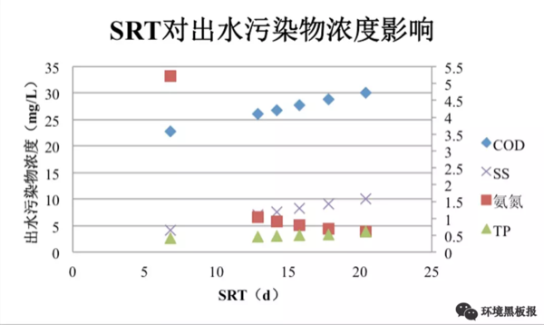
从SRT的计算公式可以看出，SRT长意味着系统中污泥浓度高，这个时候你好氧池的需氧量也是增高的，需氧量增高就意味着你需要供给更多的空气花更多的钱。这年头，钱进了腰包，谁也不愿意在让它出去，所以还是狠狠心多排排泥吧。在平均气温20℃左右的时候，将SRT控制在15d左右就足够了，当然如果你是一个负责人的运营人员，可以在此基础上不断进行调整，找到一个适合自己水厂的最佳SRT。
细心的客官可能发现我上面说到“在平均气温20℃左右的时候，将SRT控制在15d左右”（如果没发现说明你在搞事情哟）。不错对于严谨的我，是不会让你挑出任何毛病的。不同温度对SRT的要求是不同的，不信你看：好吧，我承认自己打脸了，对于吃香喝辣的异养微生物管你温度多少，只要有吃的就好。看来身体好，才是真的好。从图中可以看出，不同水温下，相同的SRT下出水COD基本没有变化；同样SRT增长，出水COD呈现增高趋势。任你温度变化，我自岿然不动，该解体还是要解体。
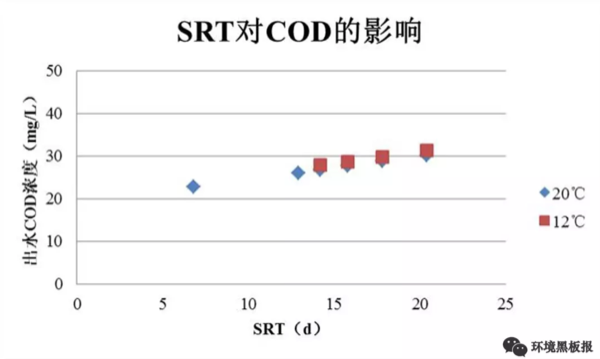
异养微生物这货不给我面子，自养微生物还是很给面子的，不同温度对SRT的要求是不同的，不信你看：哈哈，看到了吧，不同温度下，相同SRT下，出水氨氮相差很大。同样的14.2d的停留时间，20℃时出水氨氮可以达到0.9mg/L，而12℃时高达9.64mg/L（少年要注意了，此时你已经超标，环保执法人员已经上路）。对于身体羸弱的自养菌，大冬天不给增加点人手，干起活来没基情呀。虽然有社会矛盾，但是我们要抓住主要矛盾才行，因此，在冬季水温较低的情况下，我们要适当增加SRT，保证自养微生物的处理效果。

4.2.4 剩余污泥的控制
目前，控制剩余污泥排放量的常用方法有三种：污泥浓度（MLSS）控制、污泥负荷控制和SRT控制。因为污泥负荷、SRT与出水水质直接相关，用MLSS控制排泥对系统运行意义不大。实际运行中多采用二沉池排泥，这样可以减少污泥排放体积，节约费用。虽说MLSS控制排泥对系统运行意义不大，将MLSS与SRT充分结合起来可以更加方便对排泥的控制。对于那些兢兢业业工作的人员，领导安排说每天排泥半小时，真是风雨无阻坚持每天排泥半小时，结果运行了一段时间污水厂宕机了。这位员工也是很懵逼的，我也是按照指令操作，怎么就挂了呢？大兄弟不要桑心，我给你讲个故事听听：
话说有个农夫养了一只母鸡，农户好吃好喝的伺候着母鸡，母鸡也很给力的给农夫下了一堆鸡蛋，就这么着农夫的小篮子里面积攒了10个鸡蛋，然后母鸡每天都会给农夫下一个鸡蛋。农夫每天吃一个鸡蛋，母鸡每天也给他下一个鸡蛋。最近母鸡的伙食质量下降，母鸡下蛋激情受到了打击，2天才下一个鸡蛋，可农夫生活规律还是坚持一天吃一个，就这样吃着吃着发现没有鸡蛋可以吃了。农夫发现自己吃的太多了，就好几天没有吃，又重新积攒了10个鸡蛋。这次农夫改成2天吃一个鸡蛋，母鸡还是每天下一个蛋。就这样过了一段时间农夫积攒了好多鸡蛋，发现有些鸡蛋过了保质期坏掉了。
大兄弟这下明白了吧，领导让你干这件事，你按照命令执行没有问题，关键是你要考虑一下微生物们的感受，人家都入不敷出了，你还坚持往外排，不宕机都怪了。当然你也别走到另外一个极端，你不排泥，领导会拍你的。
4.2.5 结语
私房菜一里面介绍葵花宝典：OUR和太极：SV30。今天的SRT可以比作易筋经，习得该神功可以让你从一个无名小辈变成一个江湖数一数二的高手。俗话说，功夫再高也怕菜刀，SRT对应的菜刀就是自己建立的SRT数据库。练武讲究，冬练三九，夏练三伏，SRT数据库的建立也是一个道理。要坚持针对不同季节，不同来水负荷建立相应的SRT数据库，丰富自己的武器库。污水处理界没有对与错，只有适用与否。同样污水处理界的秘籍都是有着千丝万缕的联系，将一本秘籍练到炉火纯青的地步，也就可以窥探到其他秘籍的一二了。
作者：阿布呆 校稿：yufree、大石 编辑：智公子
4.3 污师私房菜系列三：AO工艺调试秘籍
想必学习环境工程专业的同学都会有这么一段经历：大四被学校安排去污水厂进行实习，大多数人实习期间都是在打牌喝酒，不要否认哟。你当时初来乍到，是否被污水厂神奇的处理工艺所折服？看着黑黝黝的水在厂里面逛了一圈就变成了清澈的水，当时一定为自己选择了这个专业而自豪。毕业后你进入了设计院，每天都在设计不同的处理工艺，画着不同的构筑物，心里暗自得意“用我设计的工艺，出水一定没问题”。这时, 如果有人问：如何将空空的构筑物变成正常运行的污水厂？想必你一定是一脸懵逼的…
今天就给大家讲讲如何将一个刚刚建好的污水厂变成一个可以正常运行的污水厂（行话叫调试）。所谓兵马未动粮草先行，调试前我们要做好一系列的准备，才能保证调试工作的顺利进行。
4.3.1 调试前置条件
土建构筑物全部施工完成，设备、电气、管道安装完成，管道打压、吹扫完成，配套水、电、气等生产条件具备启动调试，调试组织计划安排、调试方案制作完成，接种用污泥量、污泥来源、污泥投加方式等已确定。
4.3.2 物资准备
便携式DO仪、实验室化验相关设备、采样器、量筒(1L)、测温枪等。
当做好以上准备工作之后，我们就可以着手进行调试了，对于采用生化法处理污水的污水厂来说，调试的关键在于如何快速启动生化池。因此接下来我们将围绕生化池的调试进行介绍。
4.3.3 曝气器调试
曝气池正式进行污泥培养前，必须对曝气池内曝气器进行调试，以确保曝气器能够满足设计与运行的要求。
开始向曝气池中注入清水至曝气器的高度。确认所有的曝气器的水平度与水平面一致。如果曝气器水平度差大于10mm，调整曝气器高度到允许的偏差范围。继续向处理池中注水直至水面高出曝气器20cm左右。启动风机向曝气系统供气，开始时以低空气输送量输送空气，检查空气管道和曝气器连接处有无泄漏。如果空气管道发生泄漏或空气分配管和曝气器连接处有泄漏，将曝气池中的水排放到一定高度，以使泄漏点露出水面并进行修补。确保空气管道和曝气器连接处无泄漏后，重新向曝气池中注水至水面高出曝气器约20cm，开启风机对曝气器系统供气，检查整个曝气池的曝气效果，确保整个曝气池面曝气均匀，曝气器无损坏。
只有进行完曝气器调试后，方可向曝气池中注入污水，进行曝气池污泥接种与培养。
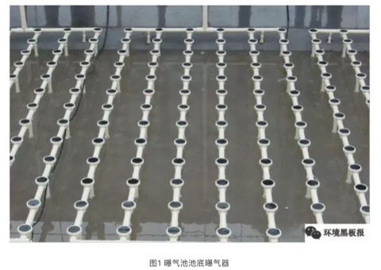
4.3.4 接种培养
接种培养就是将相近的污水处理厂回流污泥或脱水后的污泥通过水泵或直接倾倒入生化处理池，再经过一系列培菌步骤完成对整个生化系统的启动。采用接种法进行污泥培养时，主要工作步骤为接种→培养→驯化。
4.3.4.1 污泥接种
- 接种污泥的选择
采用良好的接种污泥可以大大缩短污泥培养驯化的时间。以下污泥可以作为接种污泥且按此顺序确定优先级：
同类污水厂的剩余活性污泥或脱水污泥；
城市污水厂的剩余污泥或脱水污泥；
其他不同类污水站的剩余污泥或脱水污泥；
河流或湖泊底部污泥；
粪便污泥上清液。
- 接种污泥的数量
在确定接种污泥的来源后，就要考虑接种污泥投加量的问题。一般情况下按照混合液污泥浓度3000-4000mg/L计算投加污泥量。在计算出理论需要量后，考虑到实际的污泥活性、运输过程中的损失、接种过程造成损失等因素，在理论计算值的基础上加上一个1.1-1.5的安全系数。
- 接种污泥投加方式
接种污泥的投加方式主要有泵送投加和直接投加，两种投加方式在投加过程中要确保多点投加和均匀投加，避免污泥堆积在一处。如若曝气池后接有MBR池，投加的活性污泥需要用格栅进行过滤，格栅间隙一般为1~5mm（具体数值咨询膜厂家）。
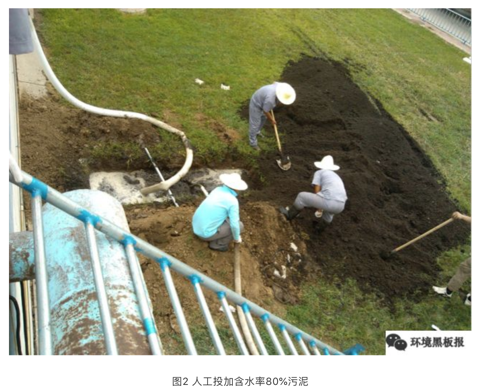
4.3.4.2 污泥培养
接种污泥投入到生化池以后，就进入培养阶段。培养阶段首选生活污水进行污泥培养，若现场没有生活污水，可采用自配营养液进行污泥培养。每天投加到生化池的COD量按混合后生化池COD质量浓度在300500mg/L水平计，氮和磷按照BOD：N：P=100：5：1折算。投加完营养液后进行闷曝，为了通过全程足量曝气达到激活活性污泥活性的目的，这个过程需要24h左右。控制要点是不进水而仅仅进行足量全程曝气，随后组织低水量营养液进入生化系统，并将曝气量降到能够保证整个生化池混合液DO值在13mg/L左右。当好氧池的出水COD降解率达到60%，混合液30分钟沉降比达到10%~30%时，认为培养成功。培养过程中可将二沉池中的污泥回流到缺氧池，并向缺氧池中投加营养盐，进行缺氧污泥的培养。
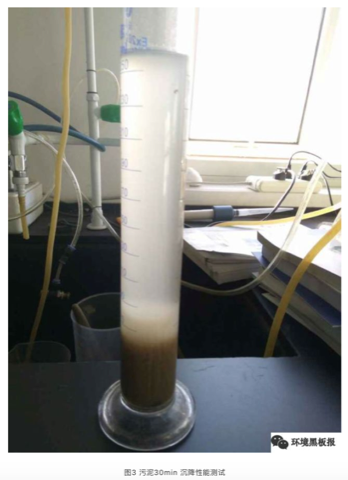
4.3.4.3 污泥驯化
当污泥培养成功后，即可进行污泥驯化阶段。驯化阶段将待处理废水提升进入A池，A池出水自流进入O池，控制提升泵水量约为设计水量的1/4，同时将曝气池混合液和二沉池的污泥回流到A池。持续运行一段时间后，观察出水水质情况，当沉淀池的出水较清澈，加大提升泵出水水量，每次增加10%~20%（以设计流量为基准），重复以上步骤，直至达到满负荷。满负荷运行水质能达标时，驯化阶段结束。进入试运行及稳定运行阶段。
4.3.5 调试注意事项
接种污泥时注意在反应池中先冲入一定量的污水，其体积要保证剩余空间可以容纳接种污泥。
培养阶段由于活性污泥数量少，基础差，繁殖基数少，所以耐受高曝气的冲击能力差，如果一直处于足量曝气的阶段，活性污泥被氧化分解的情况就会非常严重，以至于活性污泥繁殖的量抵不上被氧化分解的量。 所以，在培养阶段，闷曝过后一定要将曝气量降下来。
培养过程中，当出现较具规模的活性污泥浓度时，就需要进行适度的排泥，控制排泥量大小以排泥是否会导致生化系统活性污泥浓度降低为标准。
调试过程中保证曝气池溶解氧浓度在13mg/L，缺氧池溶解氧浓度在0.20.5mg/L，缺氧池ORP值在-50mV到-100mV左右。
驯化过程中，进水负荷要逐步提升，避免进水负荷的突然增加对系统造成负荷冲击。
调试期间确保进水、A池、O池pH值在6~9范围内，pH值过低（低于6）活性污泥池面有酸味，处理效率下降，原生动物活性减弱，pH值过高（高于9）出水混浊，处理效率下降，活性污泥有解体现象，原生动物 可见死亡解体。
在日常操作中保证系统水温在10~40℃之间，当水温偏低时，可以提高活性污泥浓度，以抵消活性污泥活性降低的负面影响，从而达到活性污泥在水温偏低时去除率增高的目的；相反地，当水温较高时，活性污泥活性旺盛，可以通过降低活性污泥浓度来规避出现未沉降絮体和混浊的上清液的不良情况。
通过排泥将曝气池中污泥浓度控制在设计值，排泥要少量多次，严禁一次性大量排泥。
每天取曝气池混合液进行SV30测定，确保SV30值在15%~30%左右。
定期对曝气池活性污泥进行SVI测定，确保SVI值在50~200之间，当SVI超过200时，可以判定活性污泥结构松散，有发生丝状菌膨胀或沉降性转差的迹象。当SVI低于50时，可以判定活性污泥出现污泥老化的可能性较大。
培养初期，由于进水负荷高，曝气池中会有大量白色泡沫，属于正常现场，可以通过洒水进行去除。
曝气池混合液回流量根据设计计算书要求进行调整，一般为100%~400%。
二沉池污泥回流比根据设计计算书要求进行调整，一般为50%~100%左右。
今天这道私房菜可能有些生硬，但绝对下饭。调试的过程即摸索运行参数及规律的过程，根据实际的情况进行参数的调整与优化，为以后的正常运行提供正确的操作方法、运行参数、维护及预防措施。调试的成功与否直接影响着整个污水厂能否正式投运。调试过程是一个理论知识与实际经验有机结合的过程，通过调试可以加深对理论知识的理解，同时可以用理论指导实践。对于刚刚踏入污水处理行业的新人，本人极力推荐大家深入现场，从调试开始，对未来的你收益无穷。
作者：阿布呆 校稿：周宁 编辑：李立平
4.4 污师私房菜系列四：浅析精确曝气技术
4.4.1 前言
目前城市污水处理较多采用活性污泥生物处理工艺，即通过微生物的新陈代谢作用，将污水中呈溶解、胶体状态的有机污染物分解、吸收或者吸附来实现水质的净化。
生物处理过程是个复杂的生物化学反应过程，通过曝气维持好氧环境是其中一个非常重要的环节。目前较多采用鼓风机曝气给微生物提供好氧环境，曝气量的控制决定着整个系统对废水的处理效果和污水处理厂能耗水平。曝气量较小时将会抑制系统中的硝化反应，同时还会引起曝气池中丝状菌繁殖，导致污泥膨胀；而曝气量较大时，不仅会增加运行费用，同时强烈的空气搅拌还会打碎污泥絮体从而影响出水水质。与此同时，如果处理工艺有硝化液回流时，过高的溶解氧也会影响反硝化效果。从一些国内的污水处理厂耗电量来看，曝气环节占据了总耗电量的50-70%，是污水处理厂能耗最大的部分之一。
为了实现按需供气和降低曝气能耗，人们提出了对曝气量进行精确控制的设想。随着污水处理厂在线监测仪表、相关设备性能和管理水平的提高，精确曝气控制已从理念成为现实（图1）。
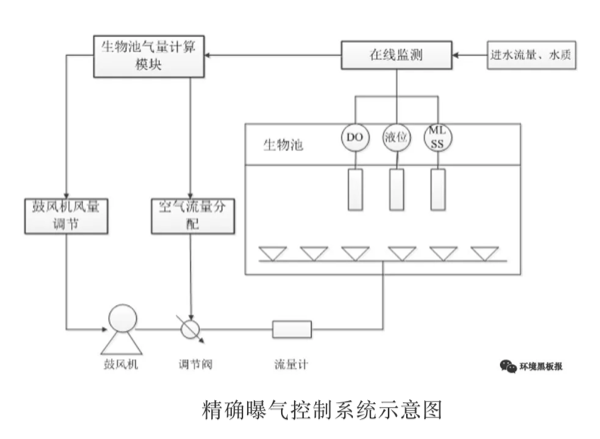
目前国内约有38座污水处理厂（总处理规模932万吨/d）安装使用精确曝气控制系统，从国内外研究和实际使用情况看，精确曝气控制系统能够降低10-30%曝气能耗（图2），经济效益可观。

4.4.2 传统曝气控制
目前我国污水厂对曝气控制的精确程度较低，主要可以概括为以下几种形式：
通过开启/关闭鼓风机和手动调节阀门调节风量。这种控制阀方式简单、粗放，一般情况下只要出水指标不出现很大的波动，一般不会开/停风机或是调节空气阀门，进行恒气量曝气。当不得不调节曝气量时，操作人员就需要反复调试，很难较快达到理想状态。这种调节方式极易造成曝气能耗的浪费。
恒溶解氧控制。这种方式是通过对溶解氧的简单反馈来实现的，普遍采用溶解氧检测仪和电动调节阀作为简单的控制回路，当生化反应池内的溶解氧(DO)值大于某一个设定值时，关闭电动蝶阀，当DO值小于某一个设定值时打开电动阀门。然而，该控制方式具有一定的滞后性，并且对阀门的调节也很难在较短的时间内完成，调节过程中甚至可能出现阀门的反复跳动。这种方式抗负荷冲击也不理想，溶解氧波动程度也较大。
比例积分微分(PID) 定值调节。这种方式根据池中溶氧仪的DO反馈信号与DO设定值进行比较，将偏差通过PID运算后传给阀门的行程控制器调节阀门的开度，进而控制池内的DO值。然而，该控制方式有时间延迟，即从开始曝气到池内DO变化需要一段时间，造成溶解氧的控制波动很大，同时为了保证安全运行，系统的DO设定值只能保持在较高的数值上，保持了过大的余度而造成浪费。
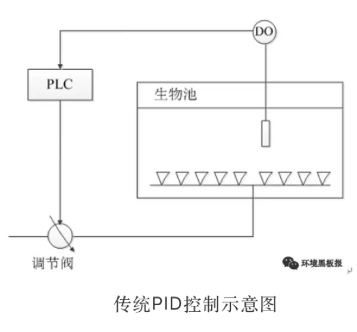
4.4.3 精确曝气控制及相关技术
所谓的精确曝气控制就是将在线仪表及阀门和鼓风机控制集成到一个智能化的控制系统中，通过动态优化与调整供气量，尽量做到按需供气，从而达到稳定污水厂出水水质和节能的目的。目前较为成熟的精确曝气控制技术主要有以下几类。
4.4.3.1 前馈+反馈+生物模型
这种控制方式是以国际水协的活性污泥模型为基础，根据污水厂历史数据和在线仪表检测到的水质水量的变化，预测曝气池所需要的曝气量，再结合曝气池中实际溶解氧、水温、混合液悬浮固体及水压等指标，来调节空气流量分配和鼓风机风量。该控制模式较为完美，但需要采集较多的指标，对仪表的性能稳定性有较高的要求，并且生物模型也难以非常准确地预测曝气池所需气量。该模型的代表控制系统是美尚生化科技公司的生物工艺智能控制系统（BIOSⅡ+BACS）和上海昊沧系统控制技术有限责任公司的AVS精确曝气流量控制系统。
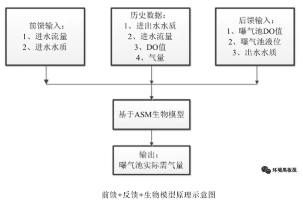
4.4.3.2 反馈调节+性能优越的硬件系统
该控制模式省去前馈和生物模型，解决了对在线仪表过多依赖和生物模型准确度问题。但该系统需要较高的对阀门和鼓风机的控制能力，即该系统要能在较短的时间内将阀门的开度和鼓风机的风量调整到能满足水质变化后曝气池所需的供气量和节能的目的。这种控制模式的代表控制系统是德国冰得公司的VACOMASS控制系统。

4.4.3.3 前馈调节+过程反馈+终端反馈
模型计算的控制方式风靡一时，好多污水厂引进计算模型，大多是对污水处理厂进行数学建模，将建模者认为的所有影响鼓风机风量的因子输入其中，如进水的水量、化学需氧量、氨氮、温度、pH、气压等。这些影响因子又基本上全部采用在线仪表测量。再根据一系列的理论公式或经验公式进行程序计算，得出某一时刻鼓风机应该输出的风量值。模型计算型的自控系统采用实时分析进水水质水量各项参数，根据一系列的理论公式得出某一时刻的工艺风量，这种控制方式的问题在于过分依赖在线仪表的准确性，经常会因为一台仪表的误差或故障而带来蝴蝶效应，导致整个计算过程与实际需求值大相径庭，同时由于实际上影响风量的因素极其复杂，如氧传递效率、曝气孔堵塞等不可测或不可控因素也会对风量产生影响。基于以上原因，天津创业环保集团开发了一种污水处理厂曝气总量的精确控制方法，引入自适应控制的理念，在风量的确定上反其道而行，即在采用进水水质水量参数作为基础的同时，又大幅度降低其权重作为风量调整预判的依据，而是根据风量作用后的效果来判断当前鼓风机的风量高或低，进而根据判断结果对风机进行固定的较小步幅的调整，使得风量不断趋于合理值。

4.4.3.4 其他
采用串级PID控制方法来实现曝气流量控制。主调节器和副调节器串接工作，主调节器的输出是作为副调节器的给定值，由副调节器控制调节阀动作。溶解氧作为主调节参数，曝气流量是副调节参数，它是为了稳定主参数而引入的辅助参数。主调节器按照主参数与工艺给定值的偏差进行工作，其输出作为副调节器的给定值，主调节器在该系统中起主导作用。副调节器按照流量这一副参数与来自主调节器的给定值的偏差进行工作，其输出直接控制调节阀。采用模糊控制器来实现溶解氧控制。输入量为溶解氧给定值与测量值的偏差e以及偏差变化率ec，输出量为向曝气池送风的空气流量与调节前空气流量的比例系数u。控制过程为控制器定时采样溶解氧和溶解氧变化率，与给定值比较，得出溶解氧偏差e以及偏差变化率ec，并以此作为控制器的输入变量，经模糊控制器输出的比例系数，再乘以一个经验比例系数k，得到风量的减量（增量），从而改变风量使溶解氧保持稳定。

4.4.4 结论与建议
关于精确曝气的气量计算模型篇幅较多，也比较枯燥，这里不再详述，如有感兴趣的同行，可以后台留言交流。
而目前理论模型的缺陷比较多，关于异养微生物的很多动力学参数并不是在所有水厂都通用，化学计量参数更是特异性比较强。因此在模型应用时要能明确的划分适用区间，而参数的获得要以大的时间跨度数据为基础，这样获得的参数通用性会比较强。模型的简化与应用需要大量的数学理论计算，对建模者的数学能力要求较高。
精确曝气控制不仅仅只有通过活性污泥数学模型才能实现，模糊控制、人工神经网络、PI计算等都可以实现曝气控制。各种控制策略的优劣需要通过实验来进行比较判断。精确曝气系统需要高素质的运营维护，很多污水厂即使拥有硬件，但管理往往跟不上，也是导致精确曝气系统不能实现既定功能的重要原因。
基于以上分析，精确曝气系统的研发可以放开思路，不仅仅考虑利用活性污泥模型，根据具体项目的现场情况和人员素质配套相应的曝气控制系统。由于污水生物处理过程是多变量、非线性、大滞后的不确定系统，并不一定要建立完全的闭环自控系统，可根据工艺现状、设备自控支持程序、运行人员操作方便与否等综合考虑，能够通过简单易行的控制策略来协助运行人员合理调控运行模型，也不失为一种良好的节能降耗措施。
作者：阿布呆 校稿：广播站王站长 编辑：Lisa
4.5 污师私房菜系列五：原来你是这样的COD
4.5.1 污师眼中的COD
化学需氧量COD（Chemical Oxygen Demand）是以化学方法测量水样中需要被氧化的还原性物质的量。废水处理厂的进水、出水以及受污染的水中，能被强氧化剂氧化的物质的氧当量。想必学过化学的各位对COD这个概念都了然于胸，倒背如流。但你真正的了解COD吗？COD背后的故事你又知道多少？今天让我们一起揭开COD的面纱，认识一下真正的COD。
污水处理界一般将COD笼统的分为两类，即COD和BOD（Biochemical Oxygen Demand）。作为一名资深的污师如果你也这样认为，那只能说你too young too simple。在污师界首先将COD分为两大类即溶解性有机物和颗粒性有机物，然后再定义其可生物降解性能。一般而言，可生物降解性能分为三种情况：快速可生物降解、慢速可生物降解和不可生物降解。

4.5.2 COD组分测试方法
当看到这个COD族谱的时候，大家大概会一脸懵逼吧。上学的时候老师只是教如何测出来总的COD，至于细分的组分老师可没教我们怎么去测。别急，既然敢把这个族谱抛出来，那么测试方法也会一并给大家的（我从来不做留图不留种子的事情）。

可能看到上面生僻晦涩的实验方法，你的头瞬间超过了大头儿子。如果按照上面的方法操作下来，一套COD族谱化验分析出来没一个月的时间是很难做出来的。不过不用担心，你的忧虑早已被我识破，为了节省大家的时间，给大家提供一个城市污水初沉池出水中有机组分所占总COD质量分数的典型取值范围供大家参考。

当然这个表格只是给出了一个典型的取值范围，具体污水厂的实际值还需要各位污师自己去测量。不要认为做这个分析化验是浪费时间，坚持做下去你会有意想不到的收获，至于这个收获是什么需要你自己去做了才知道。
4.5.3 COD组分作用
说了这么多关于COD族谱的事情，大家一定很纳闷把COD分析的这么透彻的作用是什么？对我们处理污水有哪些帮助？接下来给大家讲讲这个COD族谱的作用。
首先，COD组分分析是建立模型的必要步骤。活性污泥模型大家应该都有所耳闻，通过这个模型可以预测出水水质、调整运营策略、节能降耗等等，一句话，这是一个牛逼到不行的模型。很多小伙伴们很疑惑，这么牛的模型为啥实际应用这么少，因为这个模型的准确性很依赖对污水处理厂进水组分精准的分析。如果污水处理厂进水组分分析不到位，模型的预测精度就大打折扣。考虑到进水组分分析难度较大，很多水务公司或污水处理厂没有能力进行分析，导致了模型的应用推广受到了限制。
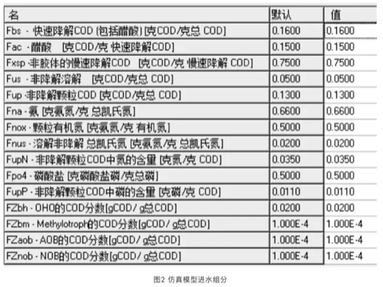
其次，COD组分分析是选择工艺或提标改造的关键参数。可以试想一下，如果入水COD溶解性不可降解部分占比50%，这种时候单单选择生化处理工艺是不能保证出水达标的，要结合高级氧化等工艺才能保证出水效果。对拟提标改造的水厂，首先分析现状出水COD组分，根据组分进行工艺选择做到有的放矢。例如出水颗粒性COD占比很高，可以选择混凝+过滤工艺；如果出水不可降解溶解性COD占比高，就要考虑高级氧化工艺了。

4.5.4 结语
COD族谱的作用远远不止以上两点，但相信上面两点就足以说明COD组分分析的重要性。理论基础决定上层高度，只有夯实基础，才能实现质的飞跃。各位污师们，快快拿出你们的瓶瓶罐罐加入到COD组分分析的行列中。重新认识COD，重新认识污水处理，以期共同在各自污水处理厂的运营工作中提质增效。
阿布呆
小生而立之前，混迹环保大千，功夫略有一二，希冀执剑天涯。污水乃吾所专，自控略知毛皮，愿结识各路好汉，共叙黑板佳话。
作者：阿布呆 校稿：看透 编辑：丫头晚安
4.6 城市之殇
4.6.1 序言
2012年7月21日，一场61年一遇的大暴雨让北京成为“汪洋水城”，想不到有生之年居然可以在帝都这个缺水的城市同时实现了“山盟海誓”。无独有偶，不仅北京遭遇了这样的窘境与困惑，其他城市诸如南京、武汉、广州、杭州等也先后开启了“看海模式”，这种“城市之殇”已经成为近年来城市发展挥之不去的阴影。

那么，为什么我们城市的排水能力一遇到暴雨甚至中小雨就原形毕露？这就有必要来聊一聊本期的话题：“海绵体”。海绵体，顾名思义，是一种对蓄水的形容，自然界原本是一个巨大的海绵体，而如今城市的爆发式发展建设已严重破坏了自然的海绵体，损害了自然的水循环系统。传统的城市建设模式根本不具备应对超标雨水的能力，那么必然会导致“逢雨必涝”，同时还会带来水环境污染、水资源紧缺、水安全缺乏保障等问题。
2013年12月12日，习近平总书记在《中央城镇化工作会议》的讲话中强调：“提升城市排水系统时要优先考虑把有限的雨水留下来，优先考虑更多利用自然力量排水，建设自然存积、自然渗透、自然净化的海绵城市”。海绵城市顺应时代号召应“运”而生。
4.6.2 海绵城市是什么
海绵城市的理念其实在我国古代早已践行，比如故宫的排水系统、云南的“哈尼梯田”模式、赣州的“福寿沟”蓄排系统等，都算作是早前的雏形。若要刨根求底地问海绵城市是什么，海绵城市更多的是一种新型的城市发展模式。

海绵城市的初衷是让城市能够像海绵一样，在适应环境变化和应对自然灾害等方面具有良好的“弹性”。简单来说，下雨的时候，城市可以像海绵一样吸水、蓄水、渗水，防止洪涝的出现；在雨水过后，干旱的时候，又可以将蓄存的水“释放”并加以利用。但同时，我们又希望这个“海绵”能发挥更大的作用，比如说还可以净化水体，让雨水在城市存积、渗透的同时得到净化，以利于进一步的雨水资源利用和生态环境保护。这就为海绵城市的设计、建设提出了更高的要求，不单是依靠恢复或构建自然途径来蓄水、存水，还应当结合人工措施来辅以完成水资源的净化、利用和排放。

因此海绵城市的具体建设既不能“窄”，也不能“宽”。太窄就会回到植树造林搞绿化的老路子上去；太宽就会变成“海绵城市一个框，啥都可以往里装”。其实海绵城市建设还是要以目标与问题为导向，运用“源头、中途、末端”的措施，使绿色设施与灰色措施相结合，才能实现真正的目标。
简明地讲，源头主要以低影响开发设施（LID）为主，包括植草沟、雨水花园、生物滞留设施等，中途主要包括：雨水廊道、管网、沟渠等，末端主要包括：湿地、调蓄塘、调蓄池、水系等。

4.6.3 海绵城市试点
海绵城市的建设借助国家重视生态环境的东风，目前共执行了2个批次、30个城市的试点，试点期3年。期内国家将给予直辖市每年6亿专项补助，省会城市每年5亿，其他城市每年4亿元。


目前来看，海绵城市建设还没有一个全国性的“统一标准”，主要是因为我国地域差异大，东西南北中，面临的问题与挑战各不相同。比如北方地区多为缺水的寒带地区，南方地区则更容易发生内涝，西部地区多属于湿陷性黄土地区，也极度缺水。因此不同区域的海绵城市建设也应因地制宜。
4.6.4 浅谈海绵感悟
笔者从2015年开始从事海绵城市建设方面的工作，先后参与了多地的海绵城市试点建设的咨询、设计等工作，主要涉及海绵城市建设系统方案编制等方面。这里跟大家分享一下三年多来笔者对海绵城市建设的一些想法与感悟，希望能对现在或将来参与到海绵城市建设中的同仁们有所帮助。
4.6.4.1 从管理部门的角度
如果您是一位相关部门的负责人，笔者虽人微言轻，但也愿意提供一些思考供您参考。 海绵城市的建设是一个很复杂、庞大、时间跨度也大的系统工程。而且里面涉及到很多学科和部门，简单数数就需要规划、市政、园林、水利、道路等专业；住建、水利、园林、环保等部门来互相配合。因此如何统筹规划，通力协作，避免形成各自为政、“九龙治水”的局面，是一门很深的学问。
同时，很多城市现在都有新、老城区，新城区建设制约少、阻力小，一旦方案设计得当，大可一马平川。但是老城区就不一样了，不仅居民多、遗留矛盾和问题多多，牵一发而动全身，搞不好容易激化矛盾。这个时候，就不能只顾海绵城市建设的目标，还要考虑经济承受能力、轻重缓急、资金利用效率、建设时序、社会影响等方面。 千万、千万不能不分轻重地全面开工建设和盲目翻挖。最好可以以解决城市内涝、雨水利用、黑臭治理为突破口，结合棚户区和城乡危房改造、老旧小区有机更新等工作同步推进。
4.6.4.2 从项目公司负责人的角度
当前海绵城市的建设基本上都以项目打包的形式交由PPP公司全权负责建设。如果您是一位项目公司的负责人，首先恭喜您拿下了海绵城市的项目，但是接着愁人的事情来了。在很多项目管理过程中，一些PPP公司“当家不做主”，没有自主权，项目的管控不是由PPP公司独立操作，而会受到相关部门的干预，导致指挥不合理的局面。因此，如果您能在项目开展前和相关部门做好充分的沟通，对您后续工作的开展会有很大帮助。 同时，虽然目前海绵城市都处在建设之中，但是即使这样，试点期也已经过了2-3年，后期的运营维护也该做一些考虑了。如果您公司还没有做这方面的准备，那可千万要小心了，现在环境追责可是很严重的哦。
4.6.4.3 从设计师的角度
如果您是一名规划师或者设计师，请一定要“迈开腿，管好嘴”。一定要多去现场，没有调查就没有发言权，不能板凳一坐就站不起身，嘴皮一碰就出方案。曾经有一位设计院的设计师理直气壮地反驳说没必要去现场看这么细，走了个过场回来，后来设计的时候全部依靠业主来提供信息作为依据。结果可想而知，做出来的设计方案根本经不起推敲，漏洞百出，更别说拿去指导施工建设。

同时也提醒大家，海绵城市建设不只是“搞种植、搞绿化”。“花花草草”固然重要，但我们也不能天天搞“拈花惹草”的老一套。海绵城市的实质应该是绿色设施（雨水花园，植草沟，下凹式绿地等）与灰色设施（管网，泵站，调蓄池等）相结合，让它们在不同时间与空间上起到相应的功能与作用。
4.6.5 结语
海绵城市的概念一经提出，就在全国迅速地铺展开来。国内新事物的出现，不像国外“自下而上”的推进模式，而是“自上而下”的运动式推动。然而，没有前期多年的研究数据作为支撑，直接开展工程实践难免会面临各种各样的困境。 目前，“海绵城市”的提法基本已家喻户晓，无人不谈“海绵”；然而能真正潜下心来认真对海绵城市进行系统的研究与梳理的人却少之又少。一个新的领域，往往需要十年甚至更长的时间来形成系统性的理论与技术体系，之后才有可能更高效、更全面指导工程实践。希望各位海绵同仁，我们一起潜心努力，为这个领域尽自己的绵薄之力。
作者：王宇 校稿：广播站王站长 编辑：栟 手绘美图：丫头晚安
4.7 浪潮下的海绵城市
简介：海绵城市已在全国范围内掀起建设的大热潮。但各城市在推进海绵城市建设过程中，仍然面临着很多的疑惑、困扰和问题，随之直接影响到城市的建设效果、推进效率及试点经验总结。
4.7.1 海绵城市建设热潮
随着我国城镇化的快速发展，现有传统的排水模式已经不能满足当前的城市基础设施发展需求，并对水环境造成严重的影响与危害。近年来，城市水体黑臭、洪涝灾害等“城市病”越发受到关注。城市当前严重的面源污染、原有良性水文循环的破坏、健康水体生态环境的日益恶化等状况与国家生态文明建设的要求、新时代城市发展的建设要求、城市生态环境质量改善需求、人民群众满意感获得严重不符。
近年来，国家层面已高度重视城市发展过程中的雨洪管理问题，尤其是在2014年10月，发布了《海绵城市建设技术指南——低影响开发雨水系统构建（试行）》，同年12月，住建部、水利部、财政部三部委联合发布海绵城市试点申报通知，2015年3月，确定南宁、武汉等16个城市作为首批海绵城市试点。2016年4月，确定北京、上海等14个城市作为第二批海绵城市试点。要求每个试点城市3年内完成不小于15km2的示范区建设，目前的情况是，第一批试点建设期基本完毕，第二批处于试点建设期末。
2015年10月，国务院发布《关于推进海绵城市建设的指导意见》，要求到2020年城市建成区20%以上的面积达到目标要求；到2030年，城市建成区80%以上的面积达到目标要求。目前，全国范围内海绵城市建设的工作正如火如荼。
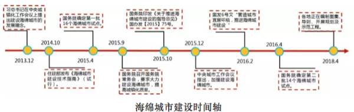
然而，在实际的操作与落实过程中，面临很多的难题与困难，主要包括观念的转变、理论与技术体系的建立、规范与标准的制定、管理模式创新、不同专业的协同合作、政策与资金保障、监测模拟评估等方面。从国内对海绵城市建设理念的普遍理解、知识技术体系的建立、实际工程经验的积累及管理机制体制建设等方面来看，要在短短几年内大规模地推动海绵城市建设，肯定会面临艰巨的挑战。
所以说，在当前政府大力支持、大量资金投入建设的背景下，仍然需要理性思考海绵城市的建设，只有全面地、系统地、完整地梳理海绵城市建设，才能高效有序地推进海绵城市建设，避免出现“一股风”、“一阵热”的现象。
4.7.2 海绵城市建设疑惑与困难
4.7.2.1 海绵城市内涵认识不清
目前，从很多试点城市的实施方案、三年实施计划、设计方案、落地工程项目等情况来看，对海绵城市的内涵与外延、年径流总量控制率、径流总量、径流峰值、径流污染控制等概念定义认识不清。
国务院办公厅《关于推进海绵城市建设的指导意见》明确指出：“海绵城市是指通过加强城市规划建设管理，充分发挥建筑、道路和绿地、水系等生态系统对雨水的吸纳、蓄渗和缓释作用，有效控制雨水径流，实现自然积存、自然渗透、自然净化的城市发展方式。”海绵城市是新时代城市转型的新理念新方式，不是某一个具体工程，不存在什么海绵项目或海绵工程的说法，应该是落实海绵城市理念的工程，所以说没有海绵城市工程，只有落实海绵城市理念的工程。
而且，海绵城市不等同于国外提倡的低影响开发（Low Impact Development），更不等同于透水砖、蓄水池等。海绵城市是为了解决实际问题产生，而不是为了增加项目与工程。

狭义上的低影响开发措施的功能和适用范围被过分夸大。一方面，有人认为海绵城市是一个框，啥都可以往里装，错误理解低影响开发是万能的，完全否定灰色基础设施，当前城市区域条件错综复杂，高效、可持续的解决方案基本无法仅仅依赖单一的绿色或者灰色的基础设施，若一味追求绿色雨水基础设施，往往会增加施工难度，造成投资浪费，无法解决实际问题。另一方面，有些人认为海绵城市是无用的，这种完全依赖灰色基础设施已经暴露很多现实问题，不符合海绵城市建设理念。

4.7.2.2 对控制目标、指标理解片面化
当前很多人对海绵城市的目标理解片面化，有人认为海绵城市建设是内涝治理，有人认为海绵城市就是黑臭水体治理，有人认为既没有内涝也没有黑臭水体的城市不需要海绵城市……海绵城市建设的六字箴言“渗、滞、蓄、净、用、排”，准确表达了海绵城市建设的多目标、多方向、多途径，其核心目标为径流总量、径流峰值、径流污染、资源回用，终极目标为：修复城市水生态、改善城市水环境、保障城市水安全、提高城市水资源承载能力

其次，对年径流总量控制率的理解不准，这个概念是降雨控制率，不是径流控制率，是一个水质控制标准，是海绵城市重要的指标，但不是唯一指标。目前从一些试点城市实施过程来看看，存在不结合实际情况，强行分配控制率指标，造成项目实施起来缺乏合理性，甚至有些方案编制单位将六字箴言割裂开来，分别进行项目分配，这样造成严重的后果，明显就是不了解各个低影响开发设施具有多功能性，而且某一个项目肯定是有多个子设施构成。所以说，在实际工作中，要根据不同条件，根据不同措施的特征、适用性进行优化组合，选择最优组合。
4.7.2.3 海绵城市建设艰难性认识不足
试点城市申报成功后，往往涉及到众多的实施项目，一方面，时间短，仅仅剩下不到三年的时间，完成几十甚至上百个项目，难度可想而知；另一方面，示范区域一般都包括老城区和新城区，对于老城区，绿地率很低，绿色空间不足，而且还面临着协调、黑臭水体、内涝积水点整治等问题，对于新城区，绿地率相对较高，空间较大，主要面临着居民反对与抵触，甚至不断投诉等，所以说数百个的改造、新建项目同时规划设计、同时施工任务相当艰巨。
总体的来说，不管旧城还是新城的海绵城市建设，均不同程度地面临这样或者那样的问题，面对这些问题，只有科学合理制定实施方案、实施计划、多方紧密协同配合等才能更高效、有序地推进海绵城市建设。
4.7.2.4 监测平台与模型模拟用途不清
随着海绵城市建设工作推进，各个城市至少试点城市都要建立海绵城市监测平台及构建模型，一夜之间相关监测设备“风生水起”，疯狂之后冷静思考，不能为监测而监测，平台构建的监测部分不是买设备，而是买数据服务。正确的是，首先要非常明确海绵城市建设监测的目的，这样搭建的平台与模型才更有意义，总结下来，监测目的主要有以下四个方面：（1）后续长期运营效果评估；（2）用与相关海绵设施（绿色设施）的科学追踪研究；（3）用于政府管理调度，通过不断调整优化模型，用来实施反馈；（4）用于未来城市规划管理。
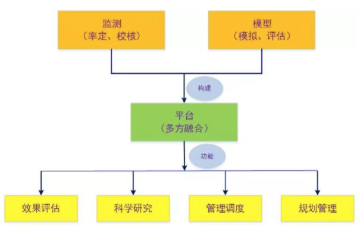
其次，监测平台建设是个比较复杂的系统工程，不求开始尽善尽美，但求不断完善，不可能一蹴而就，需要分布实施：第一步是监测，梳理清楚基本参数，展示出效果；第二步是整合监测、模型等；第三步，是结合相关城市的海绵城市专项规划、系统化方案与运营管理，真正能用于辅助方案的制定和后续的审批管理，做到多规合一、提高审批效率。
4.7.2.5 后期运营维护准备不充分
当前，在海绵城市建设过程中，国家也正在积极倡导与支持鼓励按照PPP（Private-Public-Partnership）模式进行操作，PPP模式主要由当地政府与企业共同参与投资建设、运行管理。海绵城市建设的PPP模式不应该企业或政府简单的融资渠道，更不应成为地方政府转嫁财政负担的途径，政府本身就有很强的融资能力，PPP模式是应以提高效率为初衷。
试点期已经过2~3年，后期运营维护是当前项目公司面临很棘手的问题，部分PPP公司甚至根本没有做好思想准备，有些根本不知道怎么去运营维护，项目一旦建设完工通过验收后，后期的管理基本上无人问津。
PPP公司需认识到不是建设完就拍屁股走人，还有很长时间的运营维护期。只有做好了以下三点，才算是一个好的PPP项目：第一，全生命周期，从设计、建设、运维的全生命周期，PPP合同至少15年以上必须要运营期；第二，让专业的人来干专业的事，政府是破解政策上的风险，做协调性的工作，政府不能压给社会资本，也不能社会资本什么都不管，都抛给政府，只想挣钱；第三，政府花钱是买效果，绝对不是买工程，一定落实绩效考核、按效付费。若PPP做不到以上，那就是变相的BT模式（“建设–移交”），有些PPP公司在建设上把99%的钱都赚走，只剩下1%的钱去做后期的运维，很容易造成后期服务不到位或效果没保障，那就失去PPP模式的“初心”。所以说，PPP项目应该是全生命周期的，让专业人干专业的事，政府花钱买效果，按效付费。
4.7.3 海绵城市建设展望
“不忘初心，方得始终”。海绵城市试点建设取得成功的关键在于是否实现了建设海绵城市的初心。找到海绵城市建设的初心，就是明确海绵城市建设的目的。海绵城市建设是城市发展方式的重要理念转变，是系统解决城市水问题的重要抓手，是要求改善城市生态环境质量、提升城市综合抗灾减灾能力、扩大优质生态产品的供给，让人民群众不断有获得感、幸福感。
从长期来看，我国城市的传统建设模式必然向海绵城市建设的模式转变。无论是工程界、学术界还是管理者都已经清晰认识到原有的粗放型的城市雨水排放模式问题百出。这一转变绝非一蹴而就，是一个长期而艰巨的系统工程。
海绵城市建设是今后城市理性、健康发展必须长期坚持的生态发展理念，在建设过程中要找准方向，精准施策，通过试点先行，保持久久为功。
作者：宇哥 校稿：广播站王站长，柴胡半夏苏 编辑：竹而乐
4.8 垃圾焚烧发电该怎么烧
垃圾焚烧发电是一项变废为宝的工艺，今天就让我们来看一看垃圾焚烧发电厂是如何工作的。
4.8.1 概述
为了让大家能直观地了解垃圾焚烧发电厂的工艺流程，我借了以下图片（来源于光大环保下属某垃圾焚烧发电厂的宣传卡通画）。虽然不同焚烧厂的规模、基本布置或工艺流程会有些许的差别，但个人认为差别不大，这幅卡通画完全能胜任科普的作用。

生活垃圾焚烧发电的主要原理是以生活垃圾作为燃料，放入锅炉中燃烧，将其产生的过热蒸汽输入汽轮机，实现由热能转化为电能的过程。整个工艺流程主要由垃圾接收输送系统、垃圾焚烧炉系统、余热回收系统、汽轮发电机及热力系统、烟气净化系统、灰渣处理系统、垃圾渗滤液处理系统等组成，因此，下面我们依照次此顺序向大家介绍垃圾焚烧发电工艺流程。
4.8.2 前端接收——垃圾接收输送系统
垃圾车由厂区的物流门进厂，经地磅称重后，车辆依照指示驶入垃圾卸料大厅，将垃圾倾倒入垃圾储坑。汽车通过后车斗将几吨至二十几吨不等的垃圾卸进垃圾储坑，按照要求垃圾储坑内的垃圾会停留7-10天，经发酵脱水后热值显著提升，可满足垃圾炉的焚烧要求。
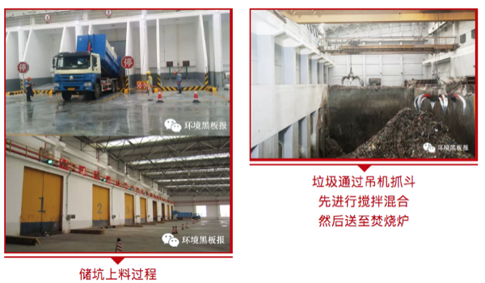
垃圾焚烧发电过程中，臭味气体的逸散对周围环境和操作工人的身体健康造成一定的影响，所以垃圾焚烧发电过程的防臭是一个困扰运营人员的难题。通常，工作人员会在垃圾储坑上部安装一次风机，垃圾储坑内的空气被一次风机抽至焚烧炉，使得臭气也进入炉中得以焚烧，转化成无臭气体，以控制臭味和甲烷气的积聚。另外，通过抽气等手段，使垃圾储坑保持负压，防止坑内的臭气外溢。

4.8.3 中端处理——垃圾焚烧系统
- 焚烧炉
目前国内外基本采用往复式炉排炉垃圾焚烧技术，垃圾抓斗将仓内垃圾提升到给料斗，通过给料槽连续不断加料到炉排入口。在推料器的作用下，垃圾首先进入排炉干燥区，通过炉排的动作，垃圾在炉排上往前移动到燃烧区，最后到达燃烬区，确保垃圾在850℃~1100℃高温下得到充分燃烧。
国内设计院会根据当地处理垃圾的热值，水分，成份等基础数据，选择合适的炉排形式进行选型。下面几张图片是垃圾炉排的一个基本的示意图（其中上面两张是炉排正在安装，下面两张则是安装完毕待运行的状态）。
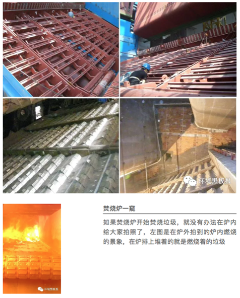
- 余热回收系统
焚烧炉的上部即为锅炉，焚烧炉出来的烟气温度约为850℃，首先被焚烧炉上部第一通道的水冷壁管吸收部分热量，然后烟气继续冲刷屏式受热面及过热器，烟气中大部分的热量在这里被吸收，最后经过省煤器时将剩余的热量再吸收一部分，尾气排至烟气净化系统（下图表示出烟气在锅炉内的流动，所经过的地方都是有换热管屏的，在右侧尾部的出口就接至烟气净化系统）。

在烟气流动的同时，汽水也在流动，一般来说汽与水的流动和烟气的流动是逆向的，方便换热。一般来说，锅炉给水经除氧器由给水泵输送，经省煤器预热后送至锅筒，然后经水冷壁和屏式受热面进一步加热，产生出汽水混合物进入锅筒。饱和蒸汽在锅筒内被分离出来，经过过热器进一步加热，最后产生出过热蒸汽，送往汽轮机。
- 汽轮发电机及热力系统
焚烧炉产生的热能通过余热锅炉产生蒸汽，再经凝汽式汽轮发电机组转化成电能。汽轮机的原理就类似于卡通图中的水壶喷出的蒸汽吹动叶片，叶片切割磁感力线就会有电能产生，再由升压站送至大电网中供千家万户使用。

余热锅炉提供的过热蒸汽进入汽轮机做功驱动发电机发电后，蒸汽进入凝汽器冷凝为凝结水，由凝结水泵将凝结水加压后经两级抽汽器、汽封加热器、低压加热器和除氧器，除氧后由锅炉给水泵返回余热锅炉。低压加热器和除氧器所用蒸汽在汽机运行时由汽机抽汽供给（这部分的内容就稍微不太好理解了，我就不加详述了，毕竟涉及的热能对象太多，没有设计或运营经验的人很容易把东西搞混）。
4.8.4 后端处理——环保系统
- 烟气净化系统
烟气净化系统主要有：炉内脱硝系统、半干式综合反应塔、活性炭吸附系统、布袋除尘器系统、烟气排放系统、烟气在线监测系统和飞灰输送系统等组成。
炉内脱硝系统多采用选择性非催化还原法（SNCR）的工艺，该工艺将20%氨水溶液喷入炉膛温度为850～1000℃的区域，氨水作为SNCR工艺的还原剂迅速热分解成NH3和其他副产品，随后NH3与烟气中的NOx进行还原反应而生成N2。
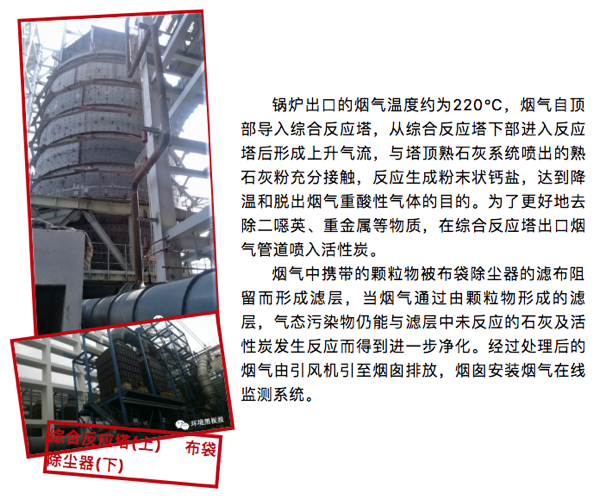
此外，焚烧炉还采取控制燃烧的方式减少二噁英的生成，具体措施为：焚烧炉焚烧垃圾的温度控制在1050℃；控制烟气在850℃以上高温区停留时间不少于2S；通过水冷壁管吸收等措施尽量减少烟气从高温到低温（400～200℃）过程的停留时间。
现在国家环保的要求越来越高了，颇有赶英超美的态势，动辄就提达到欧盟标准，于是乎不少发达区域的项目还增加了SCR（催化脱硝）和湿法处理（脱酸脱硫），进一步提升了烟气排放的指标要求。
- 灰渣处理系统
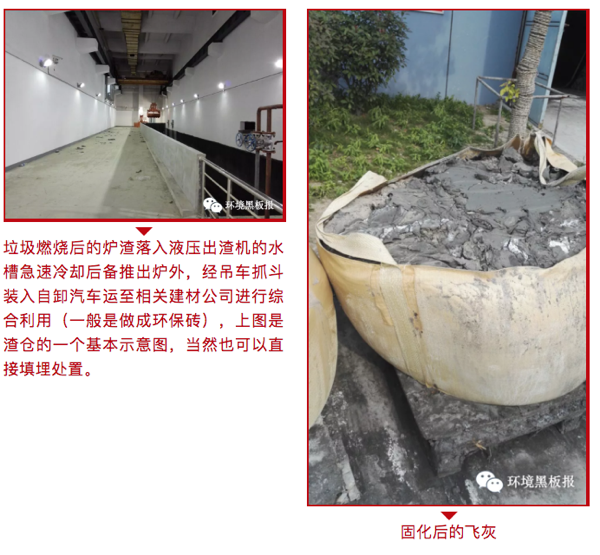
烟气净化系统中烟气所含的飞灰，由布袋除尘器捕集至除尘器灰斗，所有灰斗内飞灰经密闭式输送机送入飞灰储仓，飞灰属于危险废弃物，属国家法律监管的内容，需要做无害化处理，国内一般的飞灰会进行水泥固化处理，飞灰经固化处理达标后运至养护棚暂时存放，经一周时间固化稳定后，送至飞灰固化砌块填埋场填埋处置。下图是养化过程中的飞灰，基本粘合到了一起，不容易渗出有害物质
- 渗滤液处理系统
作为生活垃圾焚烧发电工艺的配套工程，渗滤液处理站所处理的废水包括垃圾储坑收集的渗滤液、地坪及垃圾车辆冲洗废水，有时候也会将生活污水一并处理。处理工艺多为生化+物化的组合工艺，常用的工艺有由两相厌氧池、A/O、MBR、纳滤（NF）等组合而成。
垃圾储坑内的渗滤液收集进入底部渗滤液收集池，通过水泵加压进入混凝沉淀池中进行预处理，去除较大的悬浮颗粒物。经过预处理后的污水进入调节池进行水质、水量的调节，之后通过两相厌氧池、A/O池、MBR处理装置、纳滤（NF）装置等工艺单元进行处理，废水处理达到纳入污水管道标准后接至当地的污水处理厂进行集中处理。
两相厌氧池、A/O池、MBR处理装置、纳滤（NF）装置等单元产生的污泥一起进入污泥浓缩池进行再次泥水分离，浓缩后的污泥加压送至离心式污泥脱水机脱水，污泥浓缩池上清液及脱水机产生的废液回流至调节池进行再处理，离心污泥脱水机产生的泥饼运至厂内焚烧炉焚烧处理。
渗滤液处理站收集池、厌氧池等采用加盖设施防止臭气外泄，垃圾渗滤液处理过程中产生的恶臭气体经除臭装置处理后达标排放。
针对渗滤液处理我只能算二把刀，详细工艺流程还需要各位大神补充完善。在下面上了两张图，左图是渗滤液前处理-除砂池，右图则是渗滤液处理站中的膜组件，供大家欣赏。
垃圾焚烧发电的工艺流程也就为大家大概介绍到这里了，希望大家不吝批评，相互学习。
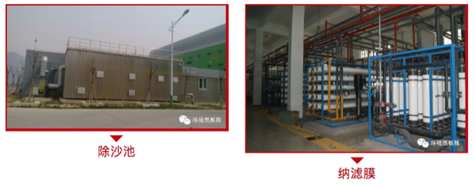
作者：小祁 校稿：看透、胜利屯屯长 编辑：栟
4.9 生活垃圾焚烧发电知多少
前不久，“环境黑板报”推出一篇名为《垃圾焚烧发电该怎么烧》的文章，详细说明了垃圾焚烧的工程流程，鉴于自己的环境监测工作也接触过垃圾焚烧发电工艺，作者决定从环境监测的角度谈谈垃圾焚烧发电的现状以及存在的问题，希望对工作业务涉及到生活垃圾焚烧发电工艺这块的各位环境小爬虫有所帮助。
4.9.1 从填埋到焚烧
随着城镇化建设的深入发展，生活垃圾围城的问题已经是老生常谈了，如何处理随着人群聚居和工业发展带来的与日俱增的生活垃圾已经成为目前城市环境管理的一个重要课题。生活垃圾填埋不仅占用空地，伴随垃圾填埋产生的渗滤液及所溢出的恶臭气体也会对周围环境造成污染。该举措的应用已经慢慢在减少，生活垃圾焚烧发电便成了为数不多的选择。
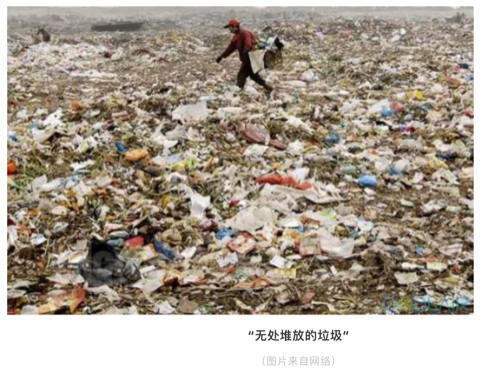
4.9.2 工艺流程
由于在《垃圾焚烧发电该怎么烧》一文中，已经将垃圾焚烧发电的工艺流程阐述明白了，本文就简单将该流程用两张图表示，若有需要更多了解的，可以阅读《垃圾焚烧发电该怎么烧》。

4.9.3 工艺应用现状
根据某市环境监测站对该市生活垃圾焚烧电厂的监督性监测情况，从中选取5家具有代表性的生活垃圾焚烧电厂（ABCDE）来分析垃圾焚烧发电的运行状况。5座生活垃圾焚烧电厂的垃圾日处理量、发电机组容量、焚烧炉类型及烟气净化工艺见表1。
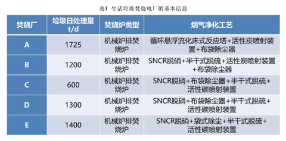
为全面评价城市生活垃圾焚烧发电厂的焚烧烟气污染物排放现状，根据我国《生活垃圾焚烧污染控制标准》（GB18485-2014）要求，评价因子主要包括\(SO_2\)、\(NO_X\)、\(CO\)、\(NH_3\)、\(HCl\)、颗粒物、重金属及其化合物等。现场采样时做好烟温、湿度、烟气流速、烟气流量的观测记录。
根据最近一次的监督性监测结果（见表2），在2017年第4季度，这5家生活垃圾焚烧电厂的排放烟气中，\(SO_2\)、\(NO_X\)、\(CO\)、\(NH_3\)、\(HCl\)、烟尘、重金属及其化合物等污染物的排放浓度指标均符合《生活垃圾焚烧污染控制标准》（GB18485-2014）表4的标准限值要求，5家生活垃圾焚烧电厂均实现焚烧烟气的达标排放。

其中A厂、B厂、C厂为国营企业，使用的处理工艺和工程配套相对中规中矩；D厂、E厂为民营企业，其中D厂近期刚完成扩容建设的环保验收，在工程运营管理和设施配套建设方面投入较大，整体的工程建设和厂区环境较优；而E厂的环保设施长期未更新，且厂区环境不佳，周边堆满了垃圾焚烧工艺产生的飞灰固块，未及时运输填埋，其垃圾焚烧尾气处理的效果也不及其余4家焚烧厂，从2017年第4季度的监测数据可看出，E厂各项烟气污染物排放浓度均高于其余4家焚烧厂，且接近国家排放标准。
4.9.4 现存问题探究
从该市的垃圾焚烧处理厂的运行情况来看，目前垃圾焚烧发电工艺的使用和运营管理已经较为普遍和成熟，虽然民众对于垃圾焚烧厂的建设运营存在一定偏见，但是垃圾焚烧发电工艺对于减少垃圾存在体量，实现变废为宝的效用是显而易见的。正常运营下的垃圾焚烧电厂对于环境的污染和损害处于可控范围以内。垃圾焚烧电厂之所以会发生污染事故，引起民间巨大争议，关键还在于生活垃圾焚烧发电工艺流程的管控不力。
- 垃圾分类回收
首先，在工艺流程的前期工程——垃圾接收运送系统中，运送垃圾至焚烧厂处理前，各地区应做好第一步的垃圾分类回收工作。可以说我国绝大部分地区的垃圾并未进行分类直接运送至垃圾焚烧厂进行焚烧处理，这将影响垃圾焚烧厂的焚烧效率，同时不能及时回收垃圾中的可利用组分，不利于降低焚烧厂的垃圾焚烧负荷。我国在2017年颁布《生活垃圾分类制度实施方案》，在工艺流程明确垃圾分类为有害垃圾、易腐垃圾和可回收物，要求各地区对垃圾进行分类处置，但是实行效果并不明显，配套的分类垃圾箱因民众垃圾分类意识不强而成为摆设。垃圾焚烧厂的运载负荷过大，无法保障将工艺运行产生的固、液、气态污染物浓度控制在国标以下。
- 焚烧温度850-1000℃
其次，在工艺流程的中期工程——垃圾焚烧系统中，应控制好焚烧炉温（850-1000℃），这点对于有效控制垃圾焚烧过程产生二噁英尤为关键。对于炉温的控制疏忽易产生三致物质二噁英，从而影响周围居民生活环境。
- 污染物的管控应全面到位
再次，在工艺流程的后期工程——环保系统中，对于固、液、气态污染物的管控应全面到位，环保工程中的焚烧尾气净化处理单元、垃圾渗滤液处理单元及炉渣飞灰等固废处理单元在日常运行管理中操作不当，容易产生污染物泄漏，从而污染周边环境，引起民怨。当前生活垃圾焚烧处理工艺配套的环保工程建设已较为成熟，其中垃圾焚烧飞灰已被列为危险废物名录，垃圾焚烧飞灰的固化砌块填埋处理应得到更大重视。
4.10 结语
生活垃圾焚烧发电工艺作为一项成熟的垃圾处理应用技术，需要企业的投入、政府的管控、民众的监督多项并举，才能在不造成环境污染的前提下更好地为社会服务。
作者：黑夜雄 校稿：看透，胜利屯屯长 编辑：栟
4.11 大气环境监测都用些啥设备？
从事大气环境监测工作已有五年之久，一直在科室文案工作与现场监测工作之间来回切换，乐此不疲。手头上的大气环境监测设备已经出现两次更新换代，借此文简要总结一番设备更新情况，并从中窥探大气环境监测技术的发展变化。
大气环境监测设备种类繁多，其中最常用的要属烟气分析仪和颗粒物采样分析仪。烟气分析仪主要作为固定污染源排放废气中的二氧化硫、氮氧化物等气态污染物浓度参数的监测仪器，而颗粒物采样分析仪则是主要针对颗粒物、烟尘等固态污染物的采样设备，后续的颗粒物浓度分析依托于采样所得的滤膜进行烘干称重计算得出。
4.11.1 关于烟气分析仪
4.11.1.1 过去式
以市级监测站的技术配备为例，2013年至2015年阶段的烟气分析仪主要是定电位电解法烟气分析仪，该类烟气分析仪的主要原理是利用抽气泵抽取废气样品进入主要由电解槽、电解液和电极组成的传感器。气态污染物通过渗透膜扩散到敏感电极表面，在敏感电极上发生氧化反应，由此产生极限扩散电流。在一定范围内极限扩散电流的大小与二氧化硫、氮氧化物等的浓度成正比，所以可由极限扩散电流来测定气态污染物的浓度。典型的设备要属德国德图公司的烟气分析仪testo335、testo350。使用烟气探针进入废气排放烟道，气体污染物通过探头扩散进入仪器传感器，在敏感电极上发生氧化反应，产生电流转换为电信号并通过手操器上的显示屏读出气体污染物的浓度。在该阶段国内的环境监测仪器公司技术研发力量比较薄弱，国产仪器在国内环境监测部门的推广力度较小，市级监测站的烟气分析仪主要来自德国德图的仪器设备。而testo350相比testo335的优势在于其抽气泵的流量更大，气体浓度测量的准确度更高；烟气进入传感器前处理设施更为齐全，仪器的使用寿命更长。
4.11.1.2 现在式
2016年至2019年阶段的烟气分析仪主要是傅立叶变换红外烟气分析仪。由于定电位电解法在烟气湿度大、污染物排放浓度低及高浓度一氧化碳条件下，测试数据精确度不足，难以满足高精度测量要求，而傅立叶变换红外烟气分析仪采用全程加热（180℃含分析池加热），彻底消除了水汽冷凝结露引起二氧化硫、氮氧化物等的分析误差，同时使用傅立叶变换红外法有限避免一氧化碳在定电位电解法中的干扰效应。在烟气含湿量大、超低浓度污染物排放、高浓度一氧化碳存在的特殊监测环境条件下，使用傅立叶变换红外烟气分析仪进行废气监测可保证测量数据的准确性和有效性。
该红外分析仪主要利用二氧化硫、一氧化氮气体在6.82~9μm、5.3μm波长红外光谱具有选择性吸收的原理，其光通量的衰减与二氧化硫、一氧化氮的浓度关系符合朗伯-比尔定律。红外烟气分析仪相比电化学传感器寿命会更长，响应时间快，抗中毒性好，反应灵敏，性能稳定可靠。但是缺点就是功耗大、结构复杂、价格贵。
目前典型的傅立叶红外设备是芬兰Gasmet Dx4000型傅立叶变换红外烟气分析仪。该分析仪主要由气体分析仪系统（GICCOR干涉仪、Peltier制冷检测器、样气室）、便携式采样系统（采样探针、加热采样头、加热采样管、便携式采样主机）、Calcmet图形分析工作站、11种气体组分出厂标定光谱库分析系统等组成。
Dx4045型傅立叶红外烟气分析仪的基本构造与Dx4000型相似，包含FT-IR多组分气体分析仪主机、图形分析工作站、锂充电电池、PDA手操器、50组分种出厂标定光谱库等。两者的应用差别在于Dx4000型傅立叶红外烟气分析仪应用于常规的固定污染源废气污染物的监测分析；而Dx4045型分析仪主要应用于突发环境事故的应急监测，作为现场分析有毒、有害气体的快速定性定量分析工具，该仪器采用便携式设计，方便携带，抗震性强，适用于应急监测工作环境。
该阶段的国内环境监测设备仪器公司，如青岛明华电子仪器公司、青岛崂山应用技术研究所，已经具备独立生产定电位电解法烟气分析仪的能力，然而对于傅立叶变换红外分析仪，国内设备的生产技术仍不成熟，红外核心元件制造离不开国外实力厂商的长期供应，市级监测站的红外分析仪仍以国外品牌为主，主要来自芬兰Gasmet厂商的傅立叶红外分析设备。
4.11.1.3 将来式
随着二氧化硫和氮氧化物分析测定的新国家标准方法出台，未来的烟气分析仪市场也将有属于紫外差分吸收光谱法烟气分析设备的一片天地。
紫外差分吸收光谱分析法的原理是气体样品中二氧化硫和氮氧化物在紫外波段具有特征吸收光谱，紫外光经过气体室被待测气体吸收，吸收后的紫外光进入光谱仪。通过对光谱信息的处理，分离出光谱中的快变部分，并对其进行反演计算，从而得到待测气体中二氧化硫和氮氧化物含量。对比定电位电解法易受多种气体交叉干扰及存在低浓度精度差的问题；傅立叶红外法的红外段有水的吸收，需去除水的吸收干扰，且存在容易受碳氢化合物干扰，不好滤除的问题，运用紫外差分法在紫外段没有水的吸收，且通过选择合适的吸收波段和相应的数学算法，完全避免交叉干扰，紫外差分法烟气分析仪在未来的大气监测工作中将被得到更多的推广使用。当然紫外法仪器自身也存在一些不足，如灵敏性一般，二氧化硫的最低量程只能到100ppm，而傅立叶红外法仪器可到50ppm，定电位电解法仪器一般为200ppm。
国内的环境监测仪器商在紫外烟气分析仪的研发方面投入力度大，时间也较早，相对于傅立叶红外烟气分析仪，他们与国外厂商的紫外分析仪器性能差距相对较小。典型的仪器要属青岛明华电子仪器有限公司的MH3200型紫外烟气分析仪。MH3200型紫外烟气分析仪具备自己的特点：1、一体式设计：一根枪完成测量，实现真正的便携式运用；2、热湿法除水：全程加热，水分以气态形式存在于被测烟气中，无论湿度多高，测量过程中二氧化硫不易损失，相比于传统的冷干法除水，更适用于高湿低硫的监测环境。3、枪管真空技术：既能防烫，又能使气室温度稳定。4、云平台应用：内置NB-IOT模块，只要有网络，就可操控仪器。在便携性、前处理效果、稳定性、实时性方面，国内紫外仪器具备和国外一流厂商设备竞争的实力。
无论是定电位电解法、傅立叶红外法或者紫外差分法，三种方法各有优劣，随着烟气监测技术趋向多样化，仪器设备不断更新精进，环境监测工作者可根据实际的监测条件进行测定方法和仪器型号的合理选择，从而实现烟气污染物浓度的精准监测。
4.11.2 关于颗粒物分析仪
4.11.2.1 过去式
在颗粒物采样方面，国内仪器的技术足以适用当前国内大气环境监测需求，考虑到国外仪器的价格虚高，环境监测部门的仪器采购需要控制成本，因此一般采用国内品牌的颗粒物采样仪器。以市级监测站的配置为例，2013年至2015年阶段，该时期的监测仪器主要是武汉天虹仪表有限责任公司的TH-880F型微电脑烟尘平行采样仪。滤筒称量分析仪器为北京赛多BP221S型的万分之一精度电子天平。颗粒物采样分析的原理是将烟尘采样管由采样孔插入烟道中，使采样嘴置于测点上，正对气流，按颗粒物等速采样原理，即采样嘴的吸气速度与测点处气流速度相等，抽取一定量的含尘气体。根据采样管滤筒上所捕集到的颗粒物量和同时抽取的气体量，计算出排气中颗粒物浓度。该阶段的颗粒物采样仪存在的问题在于：抽气泵流量不足，最高仅为80L/min，经常在高负压的管道中无法完成等速采样所需的采气体积任务；抽气泵前的过滤装置除水效果不佳，经常出现停泵现象；采样滤筒材质为玻璃纤维，在采样过程中易出现破损失重问题。
4.11.2.2 现在式
2016年至2019年，由于颗粒物采样分析的标准未做大幅变更，只做了简单的补充修订，颗粒物采样分析仪器的改进更新程度较小，在该阶段市级监测站主要增购了青岛崂山应用技术研究所生产的崂应3012H型烟尘采样仪。该仪器的采样泵流量更高，可达100L/min，对于高负压管道的采气任务可完全胜任；同时其泵前的过滤装置除水效果较好，可有效减少停泵现象；过负荷预防装置可有效保护抽气泵，避免过载烧泵问题。此外，采样滤筒采用石英滤筒，其高强度和高韧性可减少滤筒在使用过程中的人为破损失重问题。
4.11.2.3 将来式
燃煤电厂超低排放改造工作如火如荼，改造后的电厂大气污染物排放浓度要求更为严苛：烟尘≤10mg/m3、二氧化硫≤35mg/m3、氮氧化物≤50mg/m3。燃煤电厂超低排放的重点和关键在于烟尘的达标排放。国家也及时推出了低浓度颗粒物测定的新方法标准。采用普通的颗粒物采样测定仪和万分之一天平只能用于准确定量排放浓度≥20mg/m3的固定污染源颗粒物浓度。在低浓度颗粒物的监测条件下，需采用新标准方法进行监测分析，我市级监测站已增购青岛崂应3012H-D型便携式大流量低浓度烟尘自动测试仪用于准确测定低浓度颗粒物的排放数值。
相比普通的3012H型烟尘测试仪，3012H-D型低浓度烟尘测试仪的最大不同在于增设了低浓度烟尘多功能取样管（即图6的配件1），根据低浓度颗粒物测定的新标准要求，原来用于采集颗粒物的采样滤筒变更为包含石英滤膜的一体式采样头，采样结束后将整个采样头取下进行烘干称量，这样可保证滤膜在采样过程中不会因样品转移而造成破损失重，同时称量分析仪器更新为北京赛多BP221D型的十万分之一精度的电子天平，确保低浓度颗粒物测量的准确性和有效性。
未来当面对更多具有超低排放要求的企业监测任务，青岛崂应3012H-D型便携式大流量低浓度烟尘自动测试仪具有更大的用武之地，而传统的烟尘测试仪将陆续退出环境监测历史舞台。
4.11.3 结语
总体而言，烟气分析仪已经从以往定电位电解法仪器的一枝独秀向定电位电解法、傅立叶红外法、紫外差分法仪器齐头并进发展。颗粒物采样分析仪也从以往的粗放式采样称量慢慢向精细化的低浓度测试方向演变。如今环境监测系统的垂直化管理改革正在有条不紊地逐层落实推进并已接近尾声，加强各环境监测部门的监测能力建设，确保监测数据的准确性和有效性，守住环境监测工作的底线刻不容缓。环境监测队伍的能力建设离不开人才队伍的梯队建设，更离不开适应当前监测形势发展要求的仪器硬件配套建设。“工欲善其事，必先利其器”，在当前国家不断更新各种监测项目标准的大环境下，仪器操作精细化、测量数据实时化、分析方法多样化将是大气环境监测仪器设备的发展方向，未来的大气环境监测仪器设备更新进展，笔者也将持续关注！
作者：黑夜雄 校稿：看透 编辑：元宝大人